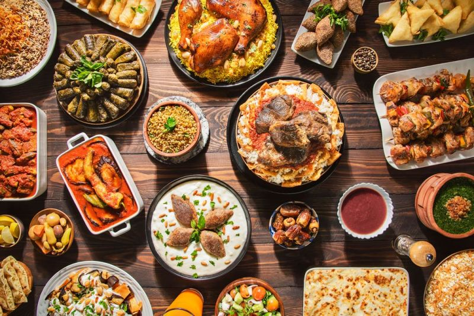
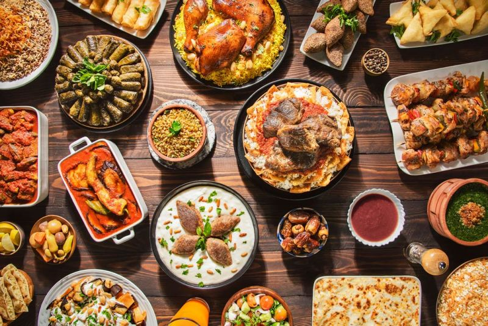
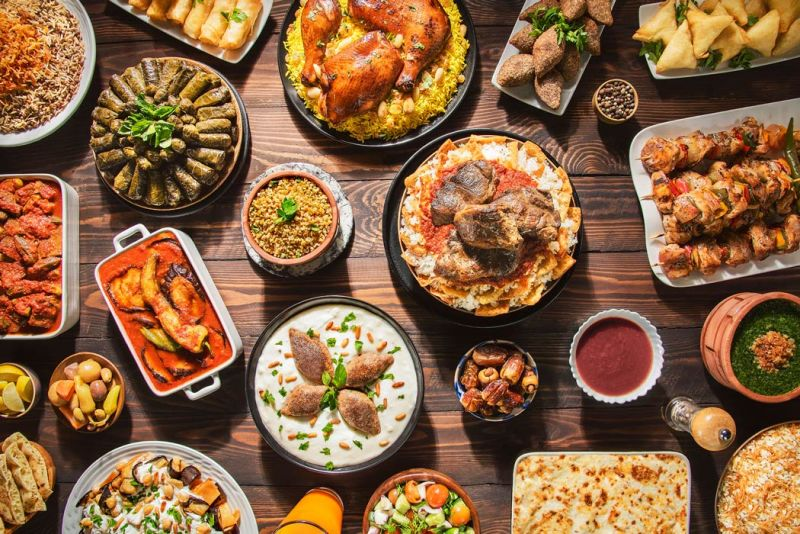

country country in the Middle East. Many people live along the banks of the Nile, which has one of the highest population densities in the world. The majority of Egyptians live in agricultural villages, some of which have 20,000 or more people.
Most of the country's people are Egyptian Arabs Egypt is located mostly in north Africa
with part of its Sinai desert located in Asia. It has a total area of 1,002,450 square km making it the 31st largest country in the world; measuring from the very North to the very south you have a total of 1,024 km Egyptian Cuisine
Egyptian gastronomy is very authentic and even though it has some influences from the Greeks like on the north coast, the country food runs pretty much in “full” which are beans, ء
A famous and traditional dish is Koshary; a dish that includes rice, lentils, pasta, tomato sauce, chickpeas,
One of the greatest Egyptian foods is Tamiya, made out of a bean paste. Molokhia is also a very common food in Egypt and consists of a soup made out of a very healthy green leaf, packed with antioxidants. Molokhia is a mark of Egyptian cuisine.
Egyptian famous meat and poultry dishes are stuffed pigeons, kebabs, and kofta. Egypt’s cuisine also offers a lot of fish crispy onions, and a garlic sauce. and seafood since they have access to some of the best fresh seafood in the world.


 
